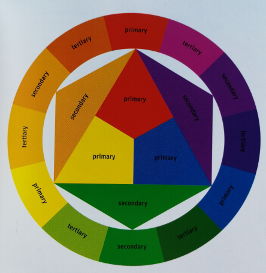
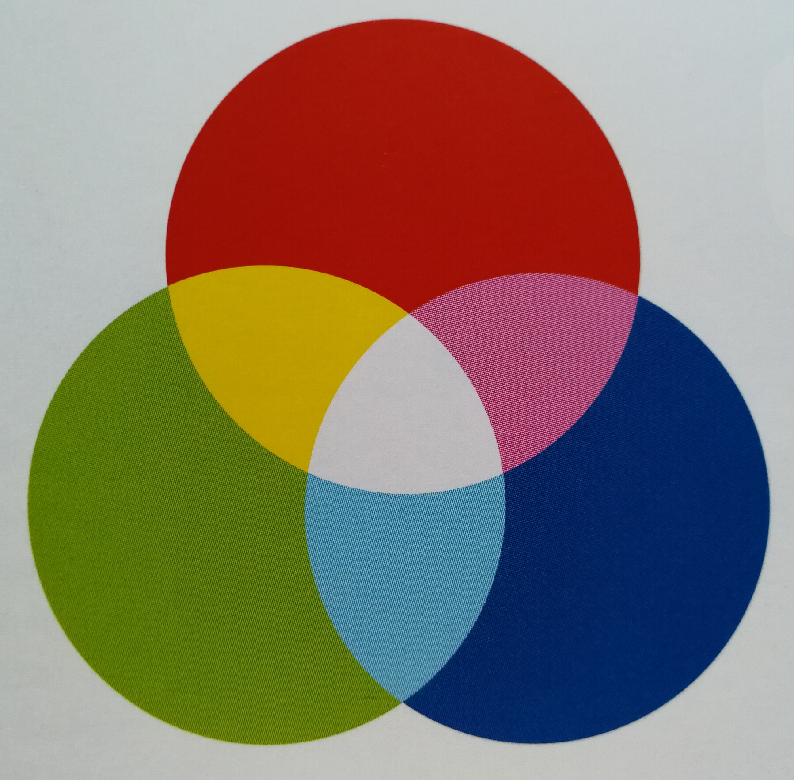
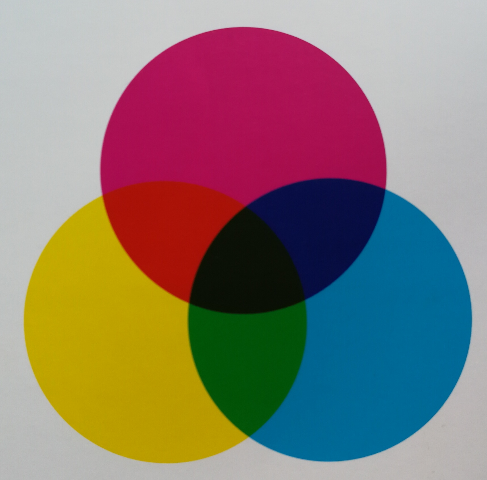
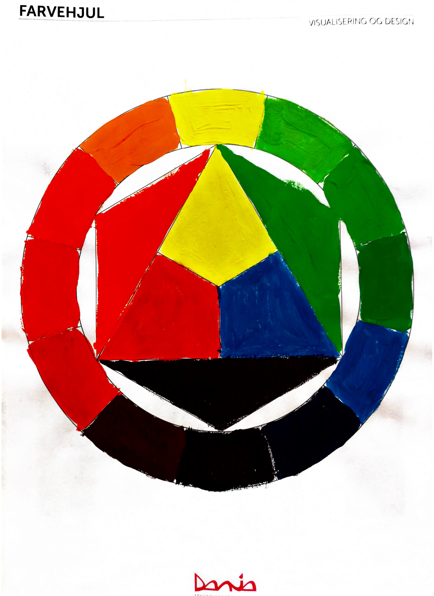

Farvelære
Farveteori
RGB - Red, Green og Blå
Er det farvesystem vi gør brug af på skærmen.
RGB danner farven hvid når de blandes.
De består hver især af 256 nuancer.

CMYK – Cyan, Magenta, Yellow and Black
Er det farvesystem vi bruger til printede medier.
CMYK derimod danner farven sort når cyan, magenta og gul blandes.

Farver opdeles i primære, sekundære, tertiære og komplementære farver.
De primære farver består af gul, rød og blå.
De sekundære farver opstår når 2 primære farver blandes eks. Gul +rød= orange, rød + blå = lilla.
Tertiære farver er en primær farve blandet med en sekundær farve.
Komplementære farver er de farver der ligger modsat hinanden i farvehjulet.
Når de to farver blandes neutralisere de hinanden.
Eks. Rød og grøn, gul og lilla, blå og orange.
Hver RGB farve består af 2 numre eller bogstaver, som fortæller hvilken farve det er, eks. rød RGB 255,0,0.
Web farver har en hexadecimal (hex) værdi eks. #ff0000 som er rød.
Øvelser:
